StoreFront 2411 through 3.5 - Tweaks
Navigation
This article applies to StoreFront versions 2411, 2402 LTSR, 2203 LTSR, 1912 LTSR and all other versions 3.5 and newer.
- Change Log
- Disable CRL Checking to speed up .NET
- StoreFront can control Receiver Shortcut placement
- PNAgent - Authentication and Default Store
- Hide Applications/Desktops from the Store
- Desktop Autolaunch
- Force desktops to launch full screen
- Autolaunch Applications
- Store for Anonymous users
- Workspace Control
- Treat Desktops as Applications
- Enable Special Folder Redirection
- Disable "Remember My Password" in Receiver Self-Service
- Remove "Activate" Option from Receiver for Web
- Log Off RfWebUI seconds after an Icon Launch
- Customize Appearance of Receiver in StoreFront 3.0 and newer
- StoreFront SDKs
:idea: = Recently Updated
Change Log
- 2023 Aug 16 - added info from CTX572543 How to auto launch published app while logon Storefront Web URL
- 2019 Aug 10 - removed HTML5 Tour tweak
- 2018 Jun 25 - Customize Appearance - added info from CTX236110 How to customize the storefront website title
- 2018 May 25 - Customize Appearance - added CTP Sam Jacobs at StoreFront: Add Application Categories to Favorites Tab
- 2018 Jan 28 - in Customize Appearance section, added link to John Billekens Hide or change “domain\user or username@domain.com” text in Storefront
- 2018 Jan 27 - in Customize Appearance section, added link to George Spiers Insert Client IPs into the StoreFront logon page.
-
2017 Jan 3 - in Customize Appearance section, added link to CTP Sam Jacobs and Rich Minichiello Adding an EULA Checkbox to StoreFront logon page
- Also added link to Citrix Blog Post How To: Add a Server Identifier to the StoreFront Page Footer.
- 2017 Jan 2 - in Customize Appearance section, added link to Trentent Tye Add a help button to your Storefront UI
- 2017 Dec 15 - in Customize Appearance section, added link to Citrix Blog Post Change Details links to stars
- 2017 Dec 2 - updated Docs links for 3.13 (current-release)
CRL Checking – Disable
When the StoreFront server checks certificate revocation for its locally signed files, a delay can occur before the StoreFront logon page is displayed.
-
Run the following PowerShell commands:
-
Another potential tweak to speed up StoreFront is to disable NetBIOS. Right-click the Start Menu and click Network Connections.
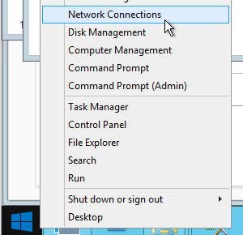
- Right-click the NIC and click Properties.
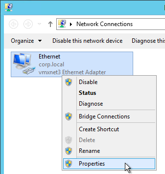
- Highlight Internet Protocol Version 4 and click Properties.
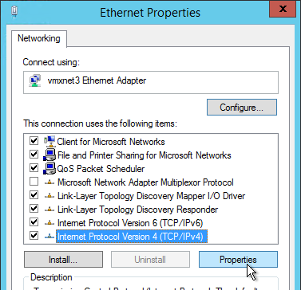
- Click Advanced.
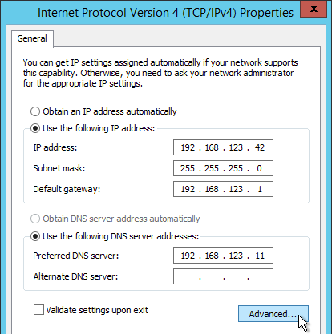
- On the WINS tab, change the selection to Disable NetBIOS over TCP/IP and click OK twice and Close once.
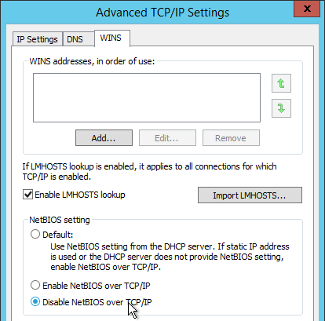
- Repeat on the other StoreFront servers.
Note: According to Microsoft, it is no longer necessary to configure generatePublisherEvidence in C:\Windows\Microsoft.NET\Framework\v4.0.30319\aspnet.config.
Receiver Shortcuts
You can use StoreFront to control placement of shortcuts on Receiver machines.
- Run Notepad elevated (as administrator).
- Edit the file C:\inetpub\wwwroot\Citrix\Roaming\web.config.
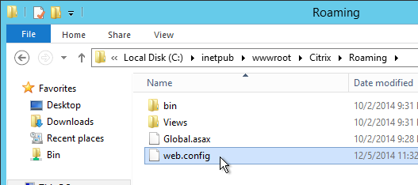
- Search for <account id. Find the Store name in the name attribute.
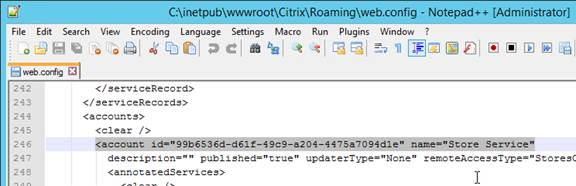
- Scroll down to the first
section located under . - See Using StoreFront account settings to customize app shortcut locations at Citrix Docs for a list of properties. Add the properties as detailed at Citrix Docs. The properties should be added after the clear tag.
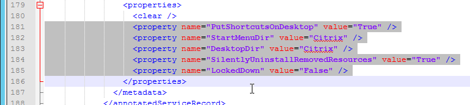
- Note: if subscriptions are enabled in StoreFront then only Favorites are added to the Start Menu and Desktop. If subscriptions are disabled then all applications are placed on the Start Menu or Desktop.
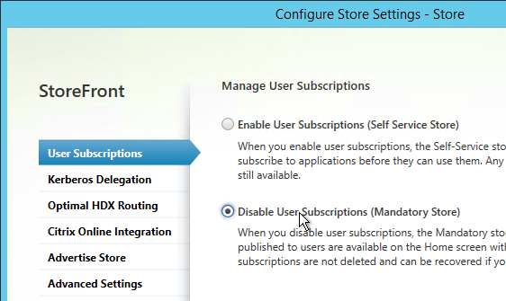
- Close and save the file.
- Then Propagate Changes.
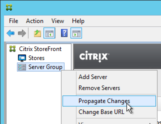
PNAgent Authentication and Default Store
Default Store
If you point your browser to https://storefront.corp.com/Citrix/PNAgent/config.xml, which is the typical path for PNAgent, you'll get a 404.
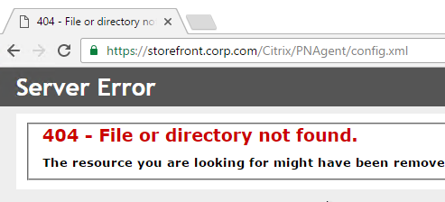
To fix this, in the StoreFront console, right-click the store, and click Configure XenApp Services Support.
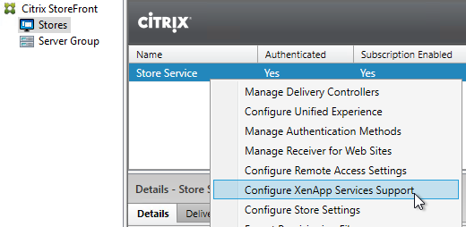
In the bottom of the window, select the Default store, and click OK.
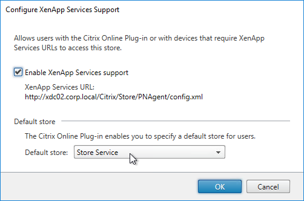
Now PNAgent can point to StoreFront without needing to specify a custom path. Note: this only works for /Citrix/PNAgent/config.xml.
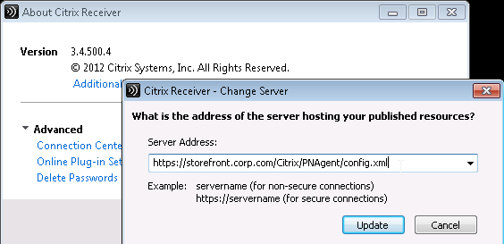
Single Sign-on
From Configure authentication for XenApp Services URLs at Citrix Docs: XenApp Services URLs support explicit, domain pass-through, and pass-through with smart card authentication. Explicit authentication is enabled by default. You can change the authentication method, but only one authentication method can be configured for each XenApp Services URL. To enable multiple authentication methods, create separate stores, each with a XenApp Services URL, for each authentication method. To change the authentication method for a XenApp Services URL, you run a Windows PowerShell script.
- On the primary StoreFront server in your deployment, use an account with local administrator permissions to start Windows PowerShell.
-
At a command prompt, type the following command to configure the user authentication method for users accessing the store through the XenApp Services URL.
& "C:\Program Files\Citrix\Receiver StoreFront\Scripts\EnablePnaForStore.ps1" –SiteId 1 -ResourcesVirtualPath /Citrix/Store –LogonMethod sson
Remember my password
If you leave PNAgent authentication set to Prompt, you can enable the Remember my password box by doing the following:
- Run Notepad as Administrator and edit the file C:\inetpub\wwwroot\Citrix\Store\Views\PnaConfig\Config.aspx.
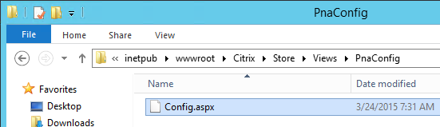
- Near line 74 is EnableSavePassword. Change it to true.
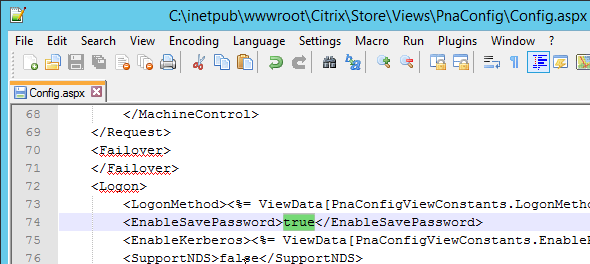
- When PNAgent connects, there should now be a Remember my password checkbox.
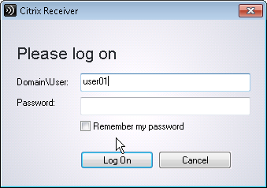
Hide Applications
You can hide all icons of a particular type (Applications, Desktops, Documents). Or you can hide icons with a specific keyword.
Go to Stores > MyStore > Configure Store Settings > Advanced Settings, and look for the Filter options.
Filter resources by type lets you hide all Applications or all Desktops. If you are running Receiver inside a published desktop, then you probably don't want desktop icons to be delivered by Receiver. In that case, create a new Store and filter the Desktop icons. Then only the application icons will be delivered.
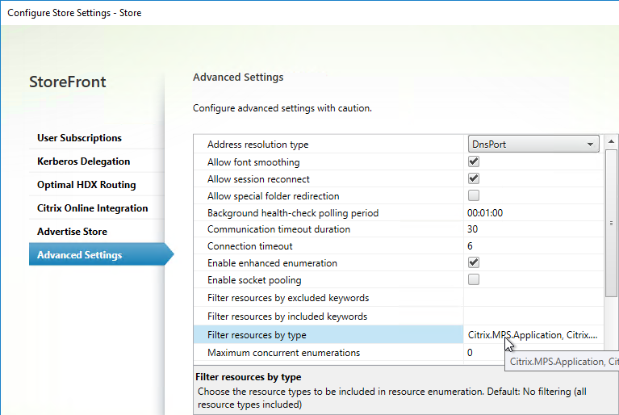
Filter resources by excluded keywords lets you filter published icons that match a custom keyword.
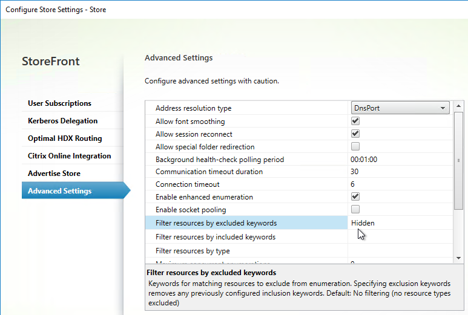
Once the ExcludeKeyword has been defined, add the keyword to a published application or published desktop description, and that application/desktop will no longer display in Receiver. This works for both Receiver for Web and Receiver Self-Service (non-browser).
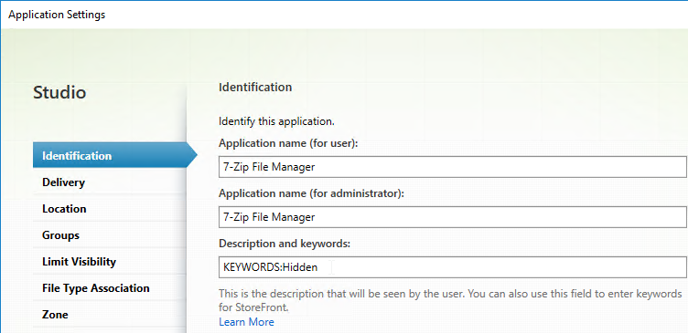
In XenDesktop 7.9 and and newer and Citrix Virtual Apps and Desktops, to assign a description to a Desktop, you edit the Delivery Group, go to the Desktops page, and edit one of the Desktops. Citrix CTX220429 Configure Resource Filtering to Allow Desktops to be filtered on Storefront.
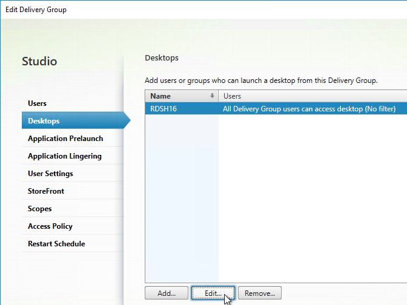
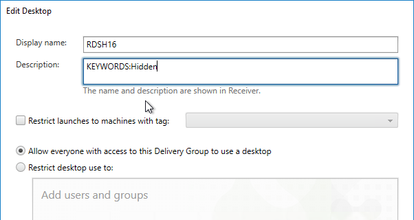
Desktop Autolaunch
By default, if only a single desktop is published to the user, Receiver for Web will auto-launch it. You can change this behavior by going to Stores > MyStore > Manage Receiver for Web Sites > Configure > Client Interface Settings and uncheck the box next to Auto launch desktop.
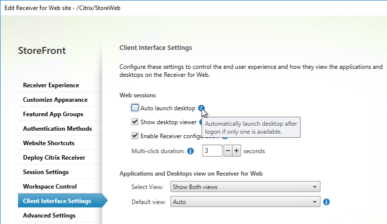
Full Screen Desktop
Citrix CTX139762 How to Configure StoreFront to Start Published Desktops in Full Screen Mode: This article describes how to configure StoreFront to start published desktops in Full Screen Mode.
- Open the file C:\inetpub\wwwroot\Citrix\Store\App_Data\default.ica on the StoreFront server(s) with notepad (as Administrator)
-
Add the line:
-
In older versions of StoreFront, it should be true instead of On.
- Save the file.
- Open the command prompt (cmd) and run iisreset.
Autolaunch Application
See CTX572543 How to auto launch published app while logon Storefront Web URL. Add the following code to the end of C:\inetpub\wwwroot\Citrix\
var ctxAppName = "AppName";
CTXS.Extensions.noteApp = function (app) {
if(app.name == ctxAppName){
CTXS.ExtensionAPI.launch(app);
}
};
See the script.js code posted by Michael Bednarek at Citrix Discussions.
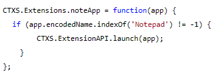
Store for Anonymous
If you intend to publish applications to anonymous users, then you can create a StoreFront store that does not require authentication. Note: anonymous stores only work internally (no NetScaler Gateway).
- On the VDAs, create and configure anonymous accounts.
- In Citrix Studio, configure a Delivery Group to accept unauthenticated (anonymous) users.
- In the StoreFront Console, right-click Stores, and click Create Store.
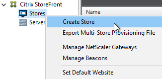
- In the Store Name and Access page, enter a new store name.
- Check the box next to Allow only unauthenticated users to access this store.
- Then click Next and finish the wizard like normal.
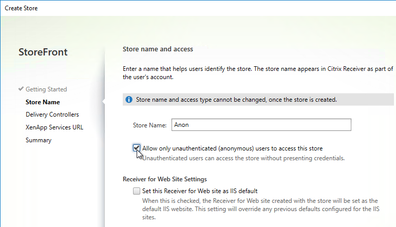
- By default, Anonymous stores are hidden (not advertised). When performing discovery in Receiver you’ll need to enter the full path to the store (e.g. https://storefront.corp.com/Citrix/Anon/discovery).
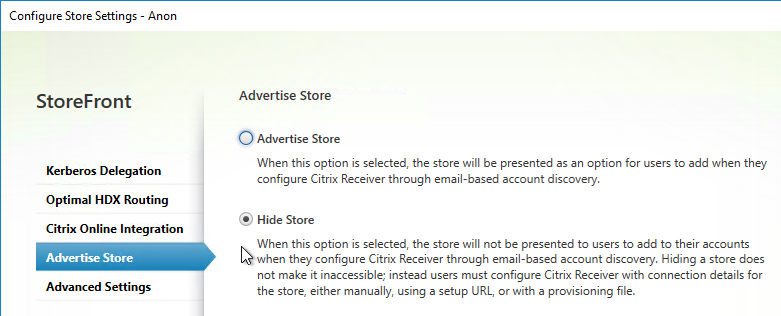
Workspace Control
Workspace Control reconnects user sessions. It can be disabled. Or configure various reconnection options.
Citrix Blog Post Workspace Control: When You DON’T Want to Roam details complete session reconnection configuration instructions for XenApp, Remote Desktop Services, StoreFront, and Receiver.
Receiver for Web
Go to Stores > MyStore > Manage Receiver for Web Sites > Configure > Workspace Control page.
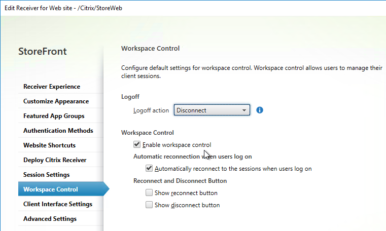
Receiver Self-Service
Citrix Blog Post - How to Disable Workspace Control Reconnect: For Receiver for Windows, Workspace Control can be managed on client devices by modifying the registry. Please see this Knowledgebase Article for how to implement it. This can also be done for domain-joined client devices using Group Policy.
In StoreFront Console, go to Stores > MyStore > Configure Store Settings > Advanced Settings, and there’s a setting for Allow session reconnect.
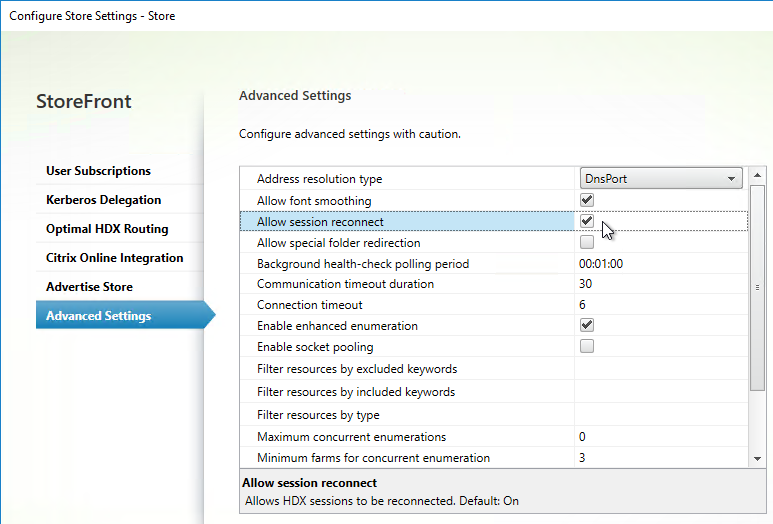
Treat Desktops as Applications
From Treating All Desktops as Applications at Citrix Blog Post What’s New in StoreFront 3.0: Desktops are treated differently from applications in StoreFront/Receivers. They are placed in a separate Desktop tab and in the case of Receiver for Web, they are not reconnected with workspace control. In some use cases, it is desirable to treat desktops as applications so that they are placed together with applications and get reconnected as part of workspace control. With StoreFront 2.x, you have to add the TreatAsApp keyword to all published desktops to achieve this effect. StoreFront 3.0 enables you to configure treating all desktops as applications at the store level without the need of adding the TreatAsApp keyword to all the published desktops. This is configurable using a PowerShell cmdlet.
& "C:\Program Files\Citrix\Receiver StoreFront\Scripts\ImportModules.ps1"
Set-EnhancedEnumerationOptions -siteId 1 -storeVirtualPath /Citrix/Store `
-treatDesktopsAsApps $true
Also see Citrix CTX223817 How to Configure "TreatAsApp" in XenDesktop 7.8.
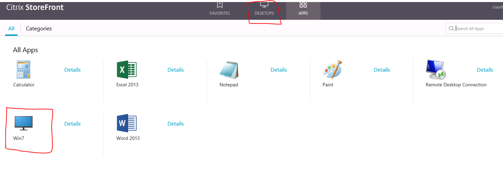
Special Folder Redirection
From Configure special folder redirection at Citrix Docs: With Special Folder Redirection configured, Citrix maps Windows special folders for the server, to those on their local computers. Special folders refer to standard Windows folders, such as \Documents and \Desktop.
In StoreFront Console, go to Stores > Configure Store Settings > Advanced Settings and there’s an option for Allow special folder redirection.
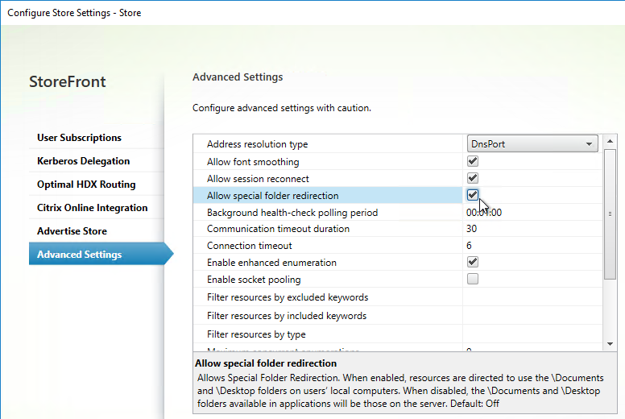
Receiver Self-service - Disable "Remember My Password"
By default, when Receiver Self-Service connects internally to StoreFront, the user is able to check the box next to Remember my password. Note: When connecting through NetScaler Gateway, this checkbox is never available.
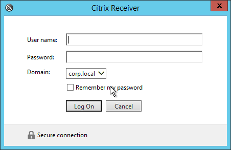
This can be disabled by making a change on the StoreFront server. This procedure is documented by John Ashman at Citrix Discussions and Prevent Citrix Receiver for Windows from caching passwords and usernames at Citrix Docs.
- Note that this procedure seems to prevent Receiver for iOS from adding accounts.
- On the StoreFront server, run a text editor elevated (as administrator).
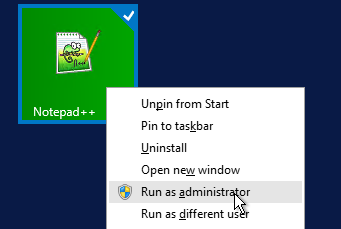
- Open the file
C:\inetpub\wwwroot\Citrix\StoreAuth\App_Data\Templates\UsernamePassword.tfrm. - Go to line 20, which should start with
@SaveCredential. - To comment out the line, wrap it in
@*and*@. Save the file when done.
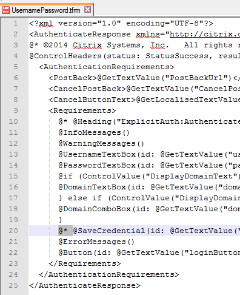
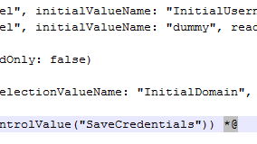
- Now the Remember My Password checkbox is gone.
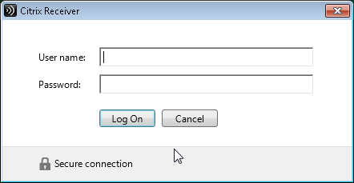
“Activate” Option in Web Page – Disable
From Citrix Discussions: to disable the "activate..."; function for Citrix receiver for windows that is visible when a user clicks their username in the upper right hand corner of Receiver for Web, in StoreFront Console, go to Stores > MyStore > Manage Receiver for Web Sites > Configure > Client Interface Settings page. There’s a checkbox for Enable Receiver configuration.
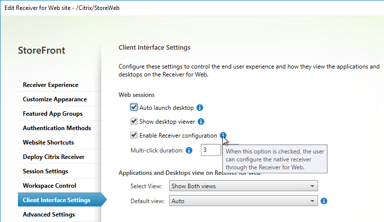
Logoff Receiver for Web Seconds after Icon Launch
From Citrix Blog Post Logging Off Receiver for Web after an Application/Desktop Launch: Simply add the following code snippet to script.js in the custom folder for the Receiver for Web site (typically C:\inetpub\wwwroot\Citrix\StoreWeb\custom\) you would like to customize:
var delayLogoffInSeconds = 10;
CTXS.Extensions.beforeWebLogoffIca = function(action) {
return 'none';
};
CTXS.Extensions.postLaunch = function(app, status) {
if (! CTXS.Device.isNativeClient()) {
if (status == CTXS.LAUNCH_SUCCESS) {
function logoff() {
CTXS.Environment.logOff();
}
window.setTimeout(logoff, delayLogoffInSeconds * 1000);
}
}
};
Customize Receiver UI in StoreFront 3.x
StoreFront 3.x customizations are visible in both Receiver for Web and in Receiver Self-Service.
Note: these customizations might not work in StoreFront 1811 and newer, which has a different user interface.
If you are load balancing StoreFront and want to put the server name on the webpage (or Receiver), see Citrix Blog Post How To: Add a Server Identifier to the StoreFront Page Footer. This works in StoreFront 1811 and newer.
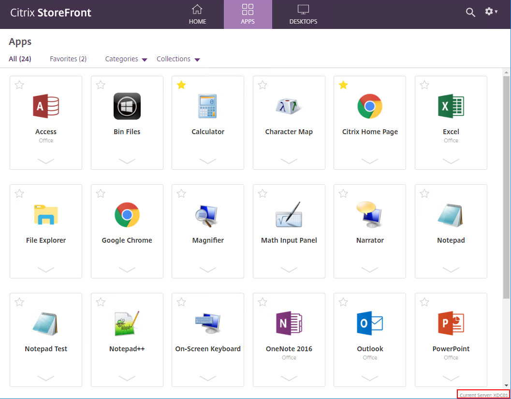
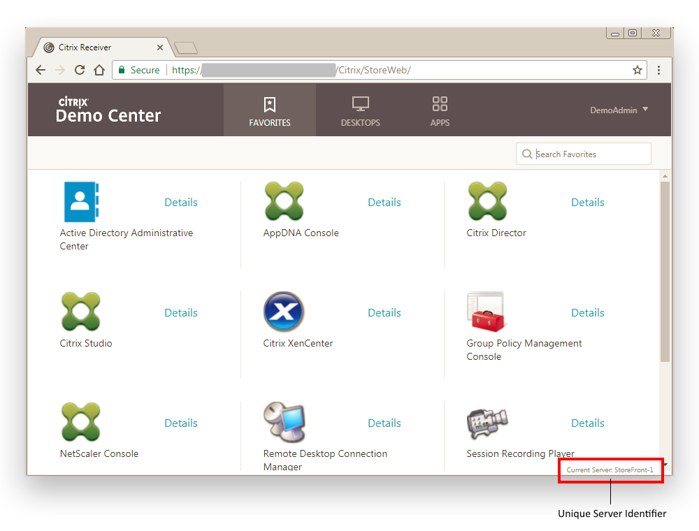
George Spiers Insert Client IPs into the StoreFront logon page.
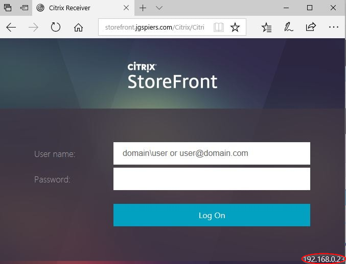
John Billekens Hide or change “domain\user or username@domain.com” text in Storefront: In C:\inetpub\wwwroot\Citrix\
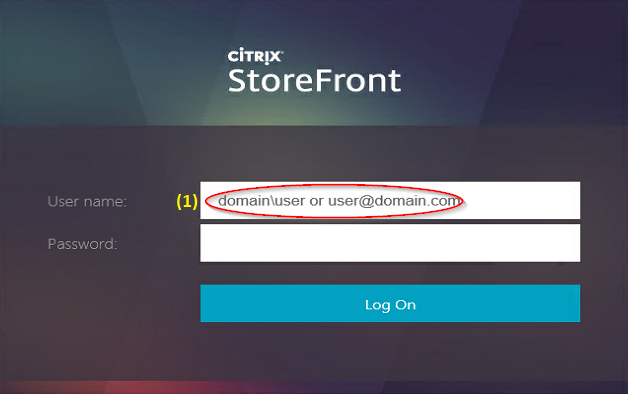
For StoreFront older than version 1811, Citrix Blog Post Dynamic Subscription Icons in StoreFront explains how to change the Details link to a star icon based on subscription status. The star icons are not clickable like they are in StoreFront 1811 and newer.
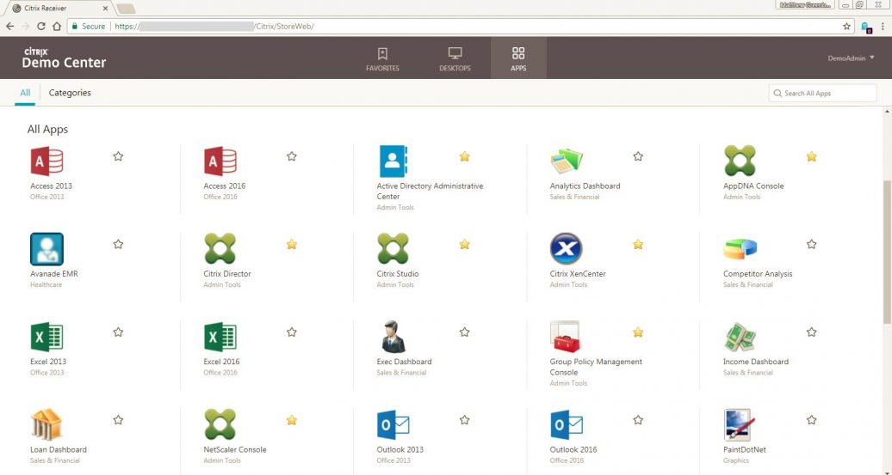
Trentent Tye at Citrix Storefront – Adventures in customization – Add a help button to your Storefront UI uses CTXS.ExtensionAPI.addHelpButton() and CTXS.ExtensionAPI.openUrl() to add a help button which opens a help page URL. This also works in StoreFront 1811 and newer.
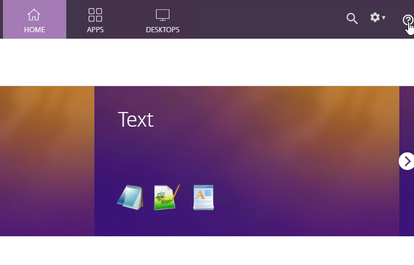
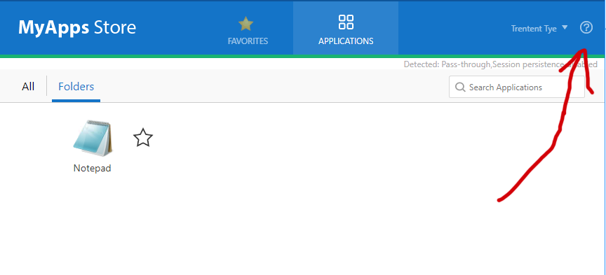
CTP Sam Jacobs and Rich Minichiello Adding an EULA Checkbox to StoreFront logon page
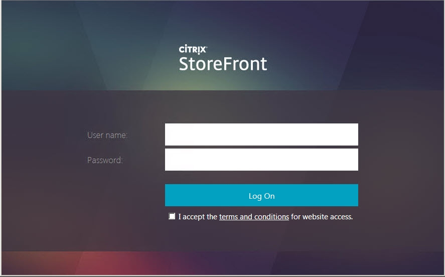
From CTP Sam Jacobs at StoreFront: Add Application Categories to Favorites Tab at CUGC. It's a simple matter to get it to again appear. Back up the file \inetpub\wwwroot\citrix\<store>Web\custom\style.css, and add the following to the bottom of the file:
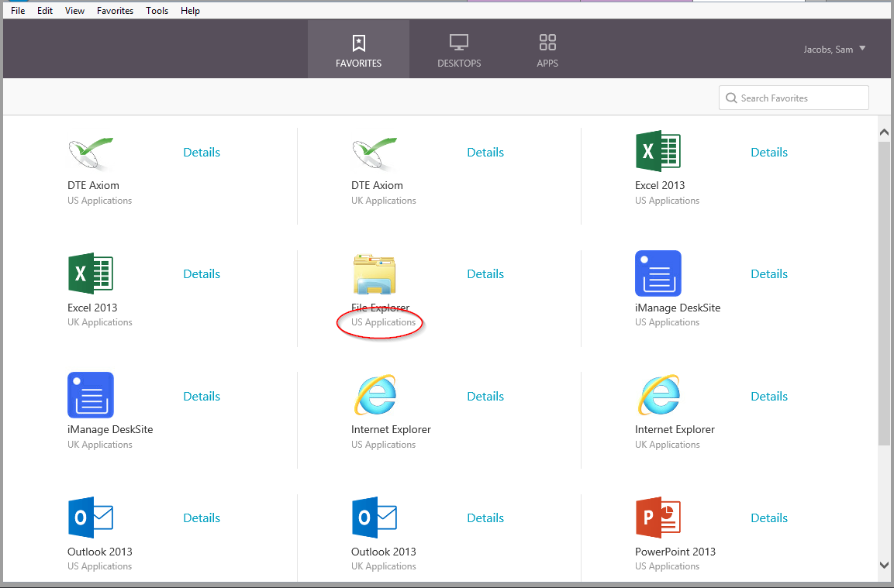
Nicolas Ignoto Lab: Part 22 – Ultimate StoreFront 3 customization guide contains many StoreFront customizations including:
- Add disclaimer
- Change logo/background
- Add header
- Add text
- Change colors
- Etc.
Citrix Blog Post Citrix Customization Cookbook contains a collection of customizations including:
- Add Static or dynamic (read from file) text to the header and/or footer of the login page.
- Click-through disclaimer before or after login page
- Footer for every page
- Default to Folder view when visiting the Apps tab
- Change default text
- Change background images for featured categories
- Background image
Citrix Blog Post Storefront 3 Web Customization: Branding Your Deployment describes how to modify the following CSS to customize the appearance of StoreFront 3.x
- Background images
- Logon button
- Colors for page and text
- How to view the mobile version of the page
- CSS for mobile pages
Jason Samuel Upgrading Citrix StoreFront 2.6 to StoreFront 3.0 – Things to Know details how to change the StoreFront logo to a Receiver logo.
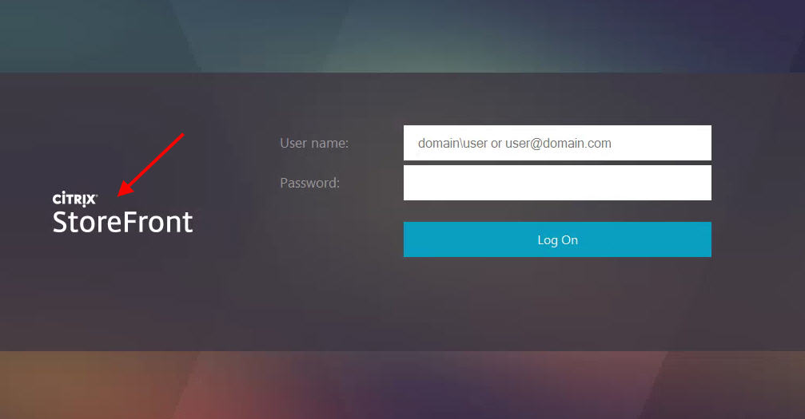
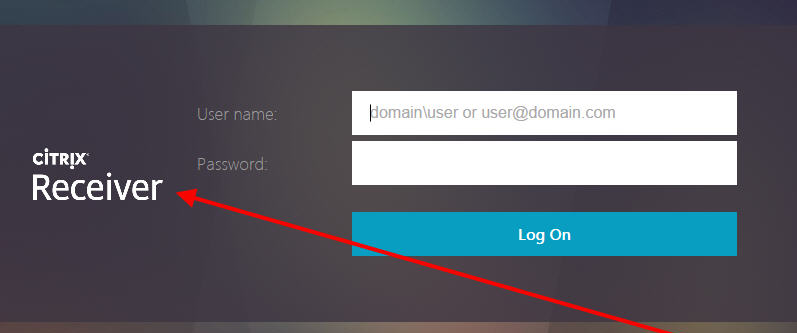
Citrix Blog Post StoreFront Message Customization describes how to add a scrolling message to the top of the screen. This is displayed in both Browsers and Receivers. This post contains a new version of the executable that supports StoreFront 3.0 and newer.
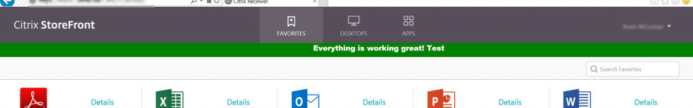
Migrate Web Interface features to StoreFront at Citrix Docs details how to configure Web Interface features in StoreFront. This includes:
- Enable return to last folder
- Header logo
- Pre-logon welcome message
- Logon screen customization
- Footer text
The code for pre-login message is already included in C:\inetpub\wwwroot\Citrix\StoreWeb\custom\script.js. Just remove the comment. Source = Citrix CTX227805 StoreFront 3.11 >>How to get the login banner on Storefront page
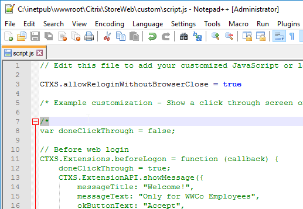
Rody Kossen and his colleague Leon Koppel built a customisation layer that reads the state of the resources presented to the end-user. If a desktop is under maintenance, inform the user so he knows before he tries to access the resource. Get the code from Citrix Blog Post Putting the Experience First, Where it Belongs. :idea:
StoreFront 3.0 Receiver Customization APIs are detailed at Citrix Developer. Use the Receiver Customization API to brand or customize your end users’ app and desktop selection experience beyond capabilities provided in the StoreFront admin console. Customizations apply to latest Web, Chrome, Windows, Mac and Linux clients, and will be extended to mobile devices in future releases.
- Trentent Tye at Citrix Storefront – Adventures in customization – Change any ICA parameter has code that allows HTTP Request Headers to change the ICA File Parameters. For example, HTTP Headers can change the Client Name, or pass Parameters to a published application.
-
Trentent Tye at Citrix Storefront – Adventures in customization – Dynamically configure workspace control based on group membership used the API to dynamically enable/disable Workspace Control based on AD group membership. It uses a PowerShell-based HTTP server to process the group lookup.
- See Citrix Storefront – Adventures in customization – Dynamically configure features based on group membership to change authentication based on group membership
- An example use case for the StoreFront 3.0 APIs is Citrix Blog Post Citrix Recipe Box: StoreFront Approvals. This code enables StoreFront to require workflow approval when a user subscribes to an app.
- See Citrix Storefront – Adventures in customization – Dynamically configure features based on group membership to change authentication based on group membership
CTX221097 How to rename items on StoreFront? describes the strings that can be changed.
- Go to C:\inetpub\wwwroot\Citrix\
Web\custom - Open strings.en.js file
- See below for an example of overriding one of the built-in strings. See the article for the full list of strings.
- AppStore defines the title of the website. (Source = CTX236110 How to customize the storefront website title)
Citrix Blog Post Receiver X1 APIs describes the following:
- Overview of the CSS classes that can be customized.
- Override Citrix’s JavaScript functions to modify behavior – exclude or restyle apps, change a sort order, add a warning message etc.
- How to force X1 UI to display in either phone or larger mode.
Citrix Blog Post X1 Customization: Going deeper with CSS describes the following:
- Use CSS (/custom/style.css) to style the three custom regions (#customTop, #customBottom, #customScrollTop). Shown below in red, blue, and pink.
- Marker classes for showing/hiding or highlighting parts of the UI: large display, small display, high DPI, Favorites view, Desktops view, Apps view, appinfo view.
Citrix Blog Post Scripting X1 describes the following:
- JavaScript code to display an Acceptance dialog box before users can login.
- Use JQuery to add HTML code to custom regions (e.g. #customScrollTop) including using CSS to hide the HTML code unless a specific tab is selected by the user.
Citrix Blog Post - Rewriting the Session ClientName from StoreFront: I would like to offer the following customisation DLL which can apply client name rewrites based on a template. The customisation template can be any string, but where that string contains a particular token, the token will be replaced by some information from the User Context. If the intent was just to replace the ClientName with the user name, the template is then just “$U”. More details and the .dll file are in the blog post.
- See CTP Jason Samuel How to rewrite the Client Name in Citrix StoreFront 3.9 using StoreFront SDK for detailed info on how to implement this customization in StoreFront 3.8, and how to handle upgrades.
StoreFront Store Customization SDK at Citrix Developer: The Store Customization SDK allows you to apply custom logic to the process of displaying resources to users and to adjust launch parameters. For example, you can use the SDK to control which apps and desktops are displayed to users, to change ICA virtual channel parameters, or to modify access conditions through XenApp and XenDesktop policy selection. Key Customization Points:
- Post-Enumeration
- Post-Launch ICA File
- Post-Session Enumeration
- Access Conditions (pre-launch and pre-enumeration)
- Provider List
- Device information
Citrix Blog Post Adding a Language to StoreFront 3.0: A new language pack is comprised of a culture definition file, a string bundle file and a custom string bundle file. See the Blog Post for more details.
To force StoreFront to only use English, add the following to c:\inetpub\wwwroot\Citrix\StoreWeb\custom\script.js as detailed at Set default language to EN at Citrix Discussions:
CTXS.Environment.getPreferredLanguages = function () { return null; }
To change the StoreFront page title, see Sam Jacobs How to Change the Page Title in Citrix Receiver 3.x at mycugc.org.
Customizations detailed at topic Modify Receiver for Web site at Citrix Discussions:
- Add Featured App Groups to Categories View
- Increase the number of Featured applications beyond the default of 3.
StoreFront SDKs
Most of the StoreFront SDK documentation can be found at https://developer-docs.citrix.com/projects/storefront-sdk/en/latest/
StoreFront Store Customization SDK - Use the Store Customization SDK to apply custom logic to the process of displaying resources to users and to adjust launch parameters. For example, you can use the SDK to control which apps and desktops are displayed to users, to change ICA virtual channel parameters, or to modify access conditions through XenApp and XenDesktop policy selection.
StoreFront Web API - Receiver for Web is a component of Citrix StoreFront that provides access to applications and desktops using a Web browser. It consists of a User Interface tier and a StoreFront Services Web Proxy tier.
StoreFront Authentication SDKs - With StoreFront 3.0, we have introduced a new Unified UI that is delivered from StoreFront to Receiver on all client platforms. Use the Receiver Customization API to brand or customize your end users’ app and desktop selection experience beyond capabilities provided in the StoreFront admin console. Customizations apply to latest Web, Chrome, Windows, Mac and Linux clients, and will be extended to mobile devices in future releases.
StoreFront PowerShell SDK - Citrix StoreFront provides an SDK based on a number of Microsoft Windows PowerShell version 3.0 modules. With this SDK, you can perform the same tasks as you would with the StoreFront MMC console, together with tasks you cannot do with the console alone.